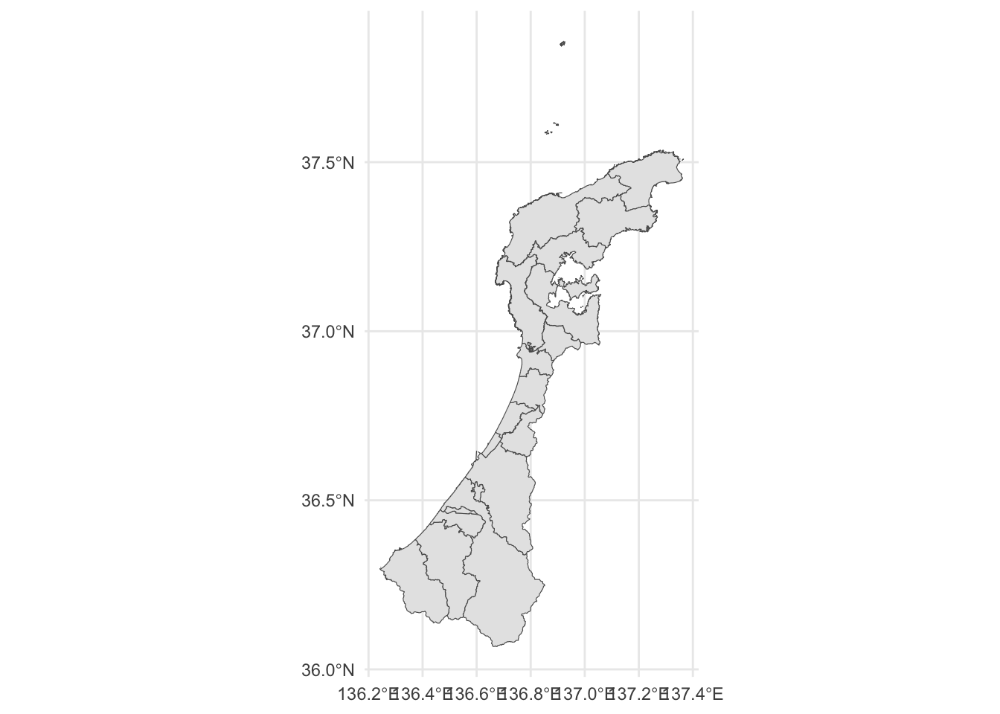
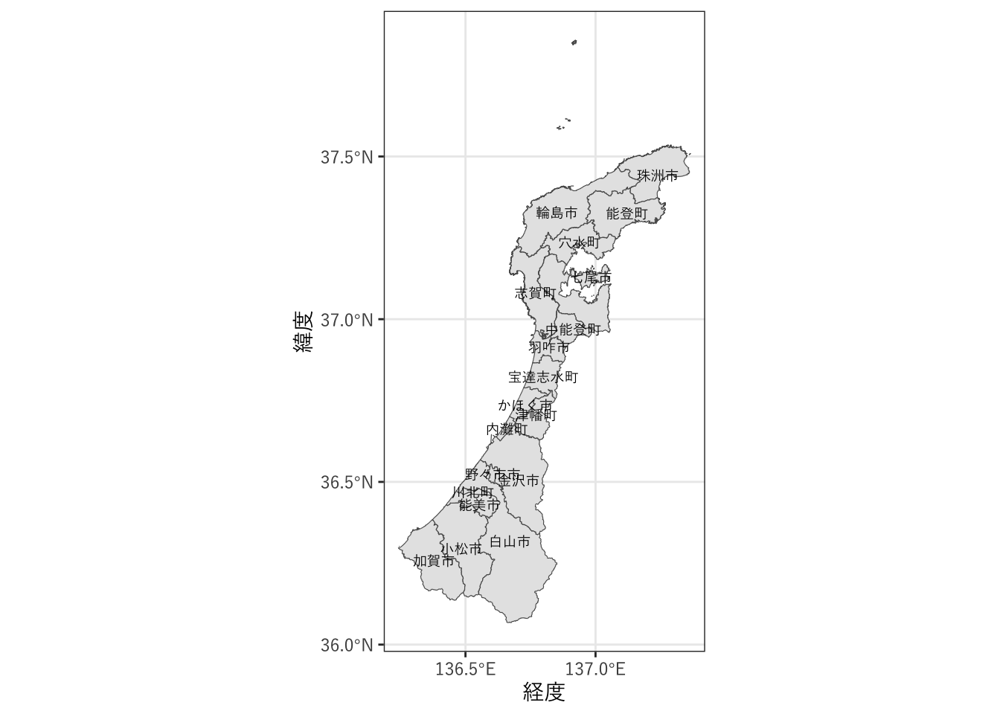
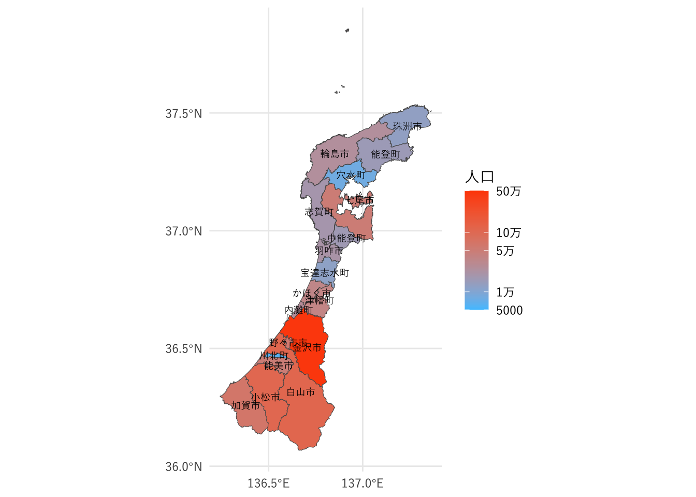

library(tidyverse)
library(sf)
shapefile <- file.path("data", "N03-20240101_17.shp")
data_s <- st_read(shapefile)6 地理空間データの利用
この章では、地理空間データをRで利用する方法を紹介します。
が、そのまえにまず座標参照系について説明しなくてはなりません。
6.1 座標参照系 (CRS: Coordinate Reference System)
地理空間データでは位置を座標で指定します。座標参照系は、この方法を定義したものです。GIS（地理情報システム）で座標を指定する方法には大きく分けて2種類あります。1つは地理座標系で、緯度・経度で位置を指定します。もう1つは投影座標系で、ある座標を原点として、XY座標（m単位）で位置を指定します。
地理座標系は、GPSのデータなど、緯度・経度で処理するデータに使用します。GPSで使われているWGS84や、国土数値情報（世界測地系）で使われているJGD2011は、地理座標系です。
投影座標系には、UTM（ユニバーサル横メルカトル）座標系や、平面直角座標系などがあります。XY座標がm単位になっていますので、距離や面積の計算に使用することができます。投影座標系は、場所によって細かく分かれています。石川県はUTM座標系では53系、平面直角座標系ではVII系という系に含まれます。
座標参照系は、ほかにもさまざまなものがあります。それぞれの座標参照系にはEPSGコードというコードが割り振られています。たとえば、WGS84のEPSGコードは4326、JGD2011は6668、UTM 53は6690、平面直角座標系VII系は6675などとなっています。
異なる座標系のデータを重ね合わせるには座標系の変換が必要になります。この処理はRでもできます。
6.2 Rで地理空間データを扱うパッケージ
Rで地理空間データを扱うためのパッケージとしては、以前はspパッケージが標準的でしたが、最近は、simple featuresというGISの規格（ISO 19125-1:2004）を扱えるようにしたsfパッケージがよく使われるようになってきています（参考文献(1)）。この章でもsfパッケージを使用して解説をすすめていきます。
6.3 地理空間データの読み込み
6.3.1 データのダウンロード
近年、さまざまな地理空間データでオープンデータとして公開されるようになってきています。この項では、まず、国土数値情報の行政区域データから石川県の行政区域データをダウンロードして使用します。各年のデータが用意されていますが、最新のものをダウンロードします。
ダウンロードしたzipファイルを展開するとフォルダには以下のファイルが含まれています。
KS-META-N03-20240101_17.xmlN03-20240101_17.cpgN03-20240101_17.dbfN03-20240101_17.geojsonN03-20240101_17.prjN03-20240101_17.shpN03-20240101_17.shxN03-20240101_17.xml
このうち、KS-META-N03-20240101_17.xmlはメタデータです。N03-20240101_17から始まるファイルがデータ本体で、これには2種類の形式のデータが含まれています。N03-20240101_17.geojson以外のファイルがシェープファイル形式のデータ、N03-20240101_17.geojsonがGeoJSON形式のデータです。
6.3.2 シェープファイル
シェープファイルは複数のファイルから校正されています。sfパッケージのst_read関数でN03-20240101_17.shpを指定して読み込みます。
読み込んだデータを表示します。
N03_002は北海道の振興局名、N03_003は郡名、N03_005は政令指定都市の行政区名なので、金沢市の行ではすべて欠損値(NA)になっています。
print(data_s)Simple feature collection with 1710 features and 6 fields
Geometry type: POLYGON
Dimension: XY
Bounding box: xmin: 136.242 ymin: 36.06723 xmax: 137.3653 ymax: 37.85791
Geodetic CRS: JGD2011
First 10 features:
N03_001 N03_002 N03_003 N03_004 N03_005 N03_007
1 石川県 <NA> <NA> 金沢市 <NA> 17201
2 石川県 <NA> <NA> 金沢市 <NA> 17201
3 石川県 <NA> <NA> 金沢市 <NA> 17201
4 石川県 <NA> <NA> 金沢市 <NA> 17201
5 石川県 <NA> <NA> 金沢市 <NA> 17201
6 石川県 <NA> <NA> 金沢市 <NA> 17201
7 石川県 <NA> <NA> 金沢市 <NA> 17201
8 石川県 <NA> <NA> 金沢市 <NA> 17201
9 石川県 <NA> <NA> 七尾市 <NA> 17202
10 石川県 <NA> <NA> 七尾市 <NA> 17202
geometry
1 POLYGON ((136.6133 36.49857...
2 POLYGON ((136.5991 36.62053...
3 POLYGON ((136.5967 36.61824...
4 POLYGON ((136.5974 36.6189,...
5 POLYGON ((136.5958 36.61709...
6 POLYGON ((136.5943 36.61553...
7 POLYGON ((136.5952 36.61667...
8 POLYGON ((136.5992 36.62078...
9 POLYGON ((136.8624 37.08288...
10 POLYGON ((136.9981 37.11807...6.3.3 GeoJSON
シェープファイルは複数のファイルに分かれていて扱いがやや煩雑です。このため、最近ではGeoJSON形式のデータファイルが使われることも多くなってきています。GeoJSONファイルもst_read関数で読むことができます。
jsonfile <- file.path("data", "N03-20240101_17.geojson")
data_g <- st_read(jsonfile)こちらも表示します。
print(data_g)Simple feature collection with 1710 features and 6 fields
Geometry type: POLYGON
Dimension: XY
Bounding box: xmin: 136.242 ymin: 36.06723 xmax: 137.3653 ymax: 37.85791
Geodetic CRS: WGS 84
First 10 features:
N03_001 N03_002 N03_003 N03_004 N03_005 N03_007
1 石川県 <NA> <NA> 金沢市 <NA> 17201
2 石川県 <NA> <NA> 金沢市 <NA> 17201
3 石川県 <NA> <NA> 金沢市 <NA> 17201
4 石川県 <NA> <NA> 金沢市 <NA> 17201
5 石川県 <NA> <NA> 金沢市 <NA> 17201
6 石川県 <NA> <NA> 金沢市 <NA> 17201
7 石川県 <NA> <NA> 金沢市 <NA> 17201
8 石川県 <NA> <NA> 金沢市 <NA> 17201
9 石川県 <NA> <NA> 七尾市 <NA> 17202
10 石川県 <NA> <NA> 七尾市 <NA> 17202
geometry
1 POLYGON ((136.6133 36.49857...
2 POLYGON ((136.5991 36.62053...
3 POLYGON ((136.5967 36.61824...
4 POLYGON ((136.5974 36.6189,...
5 POLYGON ((136.5958 36.61709...
6 POLYGON ((136.5943 36.61553...
7 POLYGON ((136.5952 36.61667...
8 POLYGON ((136.5992 36.62078...
9 POLYGON ((136.8624 37.08288...
10 POLYGON ((136.9981 37.11807...シェープファイルから読み込んだものと、GeoJSONから読み込んだものでは、なぜか座標参照系(CRS)が異なっています（前者がJGD2011、後者がWGS84）。
st_crs(data_s)Coordinate Reference System:
User input: JGD2011
wkt:
GEOGCRS["JGD2011",
DATUM["Japanese Geodetic Datum 2011",
ELLIPSOID["GRS 1980",6378137,298.257222101,
LENGTHUNIT["metre",1]]],
PRIMEM["Greenwich",0,
ANGLEUNIT["degree",0.0174532925199433]],
CS[ellipsoidal,2],
AXIS["geodetic latitude (Lat)",north,
ORDER[1],
ANGLEUNIT["degree",0.0174532925199433]],
AXIS["geodetic longitude (Lon)",east,
ORDER[2],
ANGLEUNIT["degree",0.0174532925199433]],
USAGE[
SCOPE["Horizontal component of 3D system."],
AREA["Japan - onshore and offshore."],
BBOX[17.09,122.38,46.05,157.65]],
ID["EPSG",6668]]st_crs(data_g)Coordinate Reference System:
User input: WGS 84
wkt:
GEOGCRS["WGS 84",
DATUM["World Geodetic System 1984",
ELLIPSOID["WGS 84",6378137,298.257223563,
LENGTHUNIT["metre",1]]],
PRIMEM["Greenwich",0,
ANGLEUNIT["degree",0.0174532925199433]],
CS[ellipsoidal,2],
AXIS["geodetic latitude (Lat)",north,
ORDER[1],
ANGLEUNIT["degree",0.0174532925199433]],
AXIS["geodetic longitude (Lon)",east,
ORDER[2],
ANGLEUNIT["degree",0.0174532925199433]],
ID["EPSG",4326]]座標参照系はst_transform関数で変換できます。data_gの座標参照系をJGD2011に変換してみましょう。JGD2011のEPSGコードは6668ですので、crs引数にこの値を与えます。
data_g <- st_transform(data_g, crs = 6668)CRSを確認します。JGD2011になりました。
st_crs(data_g)Coordinate Reference System:
User input: EPSG:6668
wkt:
GEOGCRS["JGD2011",
DATUM["Japanese Geodetic Datum 2011",
ELLIPSOID["GRS 1980",6378137,298.257222101,
LENGTHUNIT["metre",1]]],
PRIMEM["Greenwich",0,
ANGLEUNIT["degree",0.0174532925199433]],
CS[ellipsoidal,2],
AXIS["geodetic latitude (Lat)",north,
ORDER[1],
ANGLEUNIT["degree",0.0174532925199433]],
AXIS["geodetic longitude (Lon)",east,
ORDER[2],
ANGLEUNIT["degree",0.0174532925199433]],
USAGE[
SCOPE["Horizontal component of 3D system."],
AREA["Japan - onshore and offshore."],
BBOX[17.09,122.38,46.05,157.65]],
ID["EPSG",6668]]できたデータのdata_gのクラスを確認しています。sfクラス（およびdata.frameクラス）に属していることがわかります。
class(data_g)[1] "sf" "data.frame"6.4 地理空間データの可視化
上で読み込んだデータをggplot2のgeom_sf関数で表示してみます。
ggplot(data_g) +
geom_sf() +
theme_minimal()
この地図に、市区町村名を重ねて表示します。
そのためまず、データに含まれるポリゴンを市町村ごとにst_combine関数でまとめます。また、わかりやすいように、市区町村名のフィールドのN03_004を、nameという名前に変えておきました。
data <- data_g |>
dplyr::group_by(N03_004) |>
dplyr::summarise(geometry = st_combine(geometry)) |>
dplyr::ungroup() |>
dplyr::rename(name = N03_004)各市区町村名を地図に重ねて表示します。
jp_font <- "YuGothic"
ggplot(data) +
geom_sf() +
geom_sf_text(aes(label = name), size = 2.5, family = jp_font) +
scale_x_continuous(breaks = seq(136.5, 137.5, 0.5)) +
labs(x = "経度", y = "緯度") +
theme_minimal(base_family = jp_font)
6.4.1 コロプレス図（塗り分け地図）
2020年の総人口データを使って、各市区町村を塗り分けてみます。
まず、各市区町村の総人口を読み込みます。このデータはe-stat 都道府県・市区町村のすがた（社会・人口統計体系）からダウンロードしたものです。
読み込んだ後、市区町村名の先頭についている都道府県名を削除し（実際には空白より後だけ残す処理）、2020年度のデータだけを抽出します。
pop_data_file <- file.path("data", "FEI_CITY_241027082628.csv")
pop_data <- read_csv(pop_data_file, skip = 1,
col_types = "cc_n",
col_names = c("year", "name", "population")) |>
dplyr::mutate(name = str_sub(name, str_locate(name, " ")[1] + 1)) |>
dplyr::filter(year == "2020年度")人口データを地理空間データに結合します。left_joinは、by引数の変数をキーとして、左側のデータ(この例ではdata)を保存しつつ、右側のデータ(この例ではpop_data)から共通のキーをもつ行を結合するという関数です。
（この例では両方のデータが1対1対応するので、left_joinでもright_joinでも結果は変わりません。）
data_join <- dplyr::left_join(data, pop_data, by = "name")2020年の総人口データを色で表現して、地図化しました。総人口は対数スケールにしています。
ggplot(data_join) +
geom_sf(aes(fill = population)) +
geom_sf_text(aes(label = name), size = 2.5, family = jp_font) +
scale_x_continuous(breaks = seq(136.5, 137.5, 0.5)) +
scale_fill_gradient(name = "人口",
low = "#4dc4ff",
high = "#ff4b00",
transform = "log",
limits = c(5e+3, 5e+5),
breaks = c(5e+3, 1e+4, 5e+4, 1e+5, 5e+5),
labels = c("5000", "1万", "5万",
"10万", "50万")) +
labs(x = NULL, y = NULL) +
theme_minimal(base_family = jp_font)